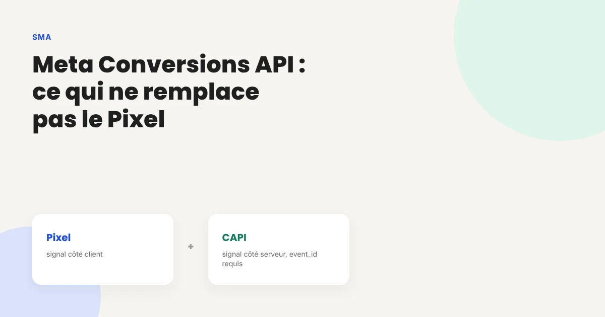

Meta Conversions API : ce que ça fait vraiment, et ce qui ne remplace pas le Pixel
Depuis l'arrivée d'ATT et le durcissement du tracking navigateur, la Conversions API de Meta est souvent vendue comme la solution qui « remplace » le Pixel. La documentation officielle Meta décrit en réalité une architecture à deux sources complémentaires, pas un remplacement.

La Conversions API (CAPI) de Meta a gagné en visibilité à mesure que le tracking navigateur côté client devenait moins fiable — bloqueurs de publicité, restrictions ITP de Safari, et plus largement la perte progressive de signal purement côté client. Le raccourci qui circule souvent dans les présentations commerciales d'agences est simple : « passez à la Conversions API, elle remplace le Pixel ». La documentation officielle Meta décrit une architecture différente.
Ce que dit la documentation : deux sources, un seul dataset
Selon la documentation officielle de Meta, les événements envoyés par la Conversions API sont rattachés à un identifiant de dataset et traités exactement de la même façon que les événements envoyés par le Pixel Meta ou les SDK Facebook. La formulation est précise : ce sont des événements serveur, liés à un dataset ID, traités comme les événements envoyés via le Pixel — pas une source qui se substitue à l'autre, mais une deuxième voie d'alimentation du même dataset. L'architecture documentée par Meta repose explicitement sur la coexistence des deux sources, pas sur la migration de l'une vers l'autre.
Le mécanisme technique : une requête POST, pas un script
Concrètement, la Conversions API fonctionne par une requête POST envoyée depuis le serveur de l'entreprise vers l'edge /events du pixel concerné, sur la Graph API de Meta — un mécanisme serveur à serveur, sans dépendance au navigateur de l'utilisateur ni à l'exécution d'un script JavaScript côté client. La documentation recommande d'utiliser la fonctionnalité Test Events du Events Manager pour vérifier que les événements envoyés par cette voie arrivent correctement côté Meta, avant de s'appuyer sur eux en production.
La déduplication, et pourquoi elle ne se fait pas automatiquement
C'est le point le plus souvent mal configuré en pratique : faire tourner le Pixel et la Conversions API en parallèle, sans précaution, revient à envoyer deux fois le même événement d'achat ou de conversion à Meta. La documentation Meta est explicite sur le correctif : il faut définir le même paramètre event_id sur les événements correspondants envoyés par le Pixel et par la Conversions API, ce qui permet à Meta de les dédupliquer correctement. Sans cette correspondance explicite d'identifiant, rien dans le système n'empêche techniquement un double comptage des conversions — ce n'est pas un détail de configuration secondaire, c'est la condition documentée pour que la coexistence des deux sources fonctionne sans fausser les chiffres.
Ce que ça change pour une mise en place propre
Trois conséquences pratiques découlent directement de cette architecture documentée. D'abord, la Conversions API se met en place en complément du Pixel existant, pas en remplacement : retirer le Pixel au profit de la seule Conversions API prive de la mesure comportementale côté client que le Pixel capture et que le serveur, par nature, ne voit pas directement (navigation, temps passé, événements déclenchés sans action serveur correspondante). Ensuite, la déduplication par event_id n'est pas optionnelle dès que les deux sources coexistent : c'est la différence entre des données fiables et des conversions comptées en double qui gonflent artificiellement les chiffres de performance. Enfin, l'Event Match Quality (EMQ) visible dans le Events Manager donne un indicateur concret de la qualité des paramètres envoyés — un signal à surveiller après la mise en place, pas seulement au moment du déploiement initial.
FAQ
La Conversions API remplace-t-elle le Pixel Meta ?
Non, pas selon la documentation officielle Meta. Les événements envoyés par la Conversions API sont rattachés à un identifiant de dataset et traités de la même façon que les événements envoyés par le Pixel ou les SDK Facebook — la documentation les présente comme deux sources d'événements complémentaires vers le même dataset, pas comme un remplacement de l'une par l'autre.
Comment Meta évite-t-il de compter deux fois un même événement envoyé par le Pixel et la Conversions API ?
Par une déduplication basée sur un paramètre event_id. La documentation Meta est explicite : il faut définir le même event_id sur les événements correspondants envoyés par le Pixel et par la Conversions API, ce qui permet à Meta de les dédupliquer correctement. Sans cet identifiant commun, rien n'empêche techniquement un double comptage.
Comment la Conversions API envoie-t-elle concrètement les événements à Meta ?
Par une requête POST vers l'edge /events du pixel concerné, sur la Graph API de Meta. La documentation recommande d'utiliser la fonctionnalité Test Events du Events Manager pour vérifier que les événements envoyés par le serveur arrivent correctement avant de les considérer comme fiables en production.
Un tracking Meta Ads à fiabiliser côté serveur ?
Pour aller plus loin, voir la page SMA, et l'article Meta Ads : segmenter ses audiences sans tout miser sur le ciblage automatique.
Pour continuer sur ce sujet.